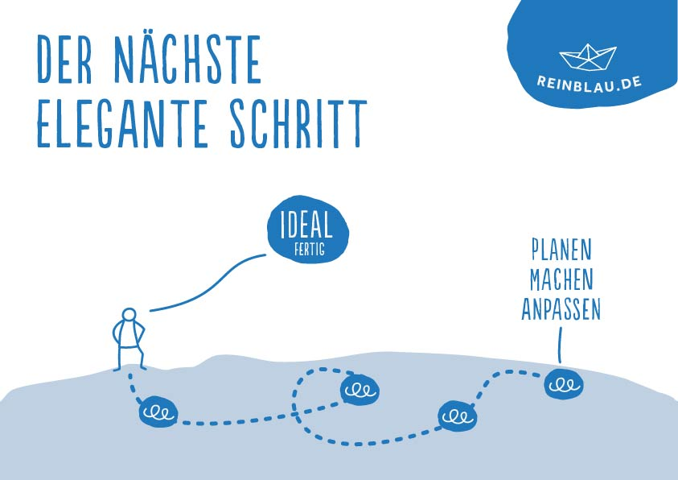

Reinblau seit April 2016 eigetragene Genossenschaft
Zusammenschluss von Freelancern
Alle Mitglieder gleichberechtigt am Unternehmen beteiligt
Genossenschaft ideale Gesellschaftsform für unsere Ziele: Selbstverwaltung, Förderung der Mitglieder, Transparenz
Zweck
Eine Arbeitsumgebung gestalten, in der wir gerne arbeiten
Wie setzt man das im Arbeitsalltag um? Wer entscheidet was?
Unterschiedliche Erwartungen sorgen für Reibung
A-B-C-Modell
Neben der Arbeit in der Genossenschaft (A), ist auch Arbeit an der Genossenschaft (B) nötig
Daneben Supervision mit externer Hilfe/Beratung (C) (Dank an Martina Röll)
Holacracy: Explizite Strukturen, Rollen und Verantwortlichkeiten sollen helfen, Reibungen zu verhindern
Rollen
Jede Rolle hat einen definierten Zweck und damit verbundenen Aufgaben
JedeR kann selbstverantwortlich handeln, ohne auf Erlaubnis und/oder Einverständnis zu warten
Komme ich nicht weiter, frage ich um Hilfe; direkt andere Rolle oder im Tactical-Meeting
Frage im Meeting: „Was brauchst du?“ soll ermöglichen, unterstützen, nicht kontrollieren

Der nächste elegante Schritt
Arbeit erfolgt möglichst lean und agil: kleine Schritte machen, Feedback einholen,
anpassen
Was ist der nächste Schritt? Nicht ewig das große Ziel planen alle
Unwägbarkeiten bedenken, sondern mit kleinem Schritt starten, Fehler machen, daraus lernen und besser machen
Interne Arbeit und Strukturen ebenso agil und lean entwicklen, wie die Arbeit in Projekten
Governance
Spannungen sind nicht Störungen, sondern Anlässe, die Struktur weiterzuentwickeln
Governance-Meeting: Dezidiertes Meeting, in dem die Struktur weiterentwickelt wird
Strenge Moderation durch einen Facilitator
Einwände müssen aus der Rolle heraus begründet oder konkreter Schaden muss aufgezeigt werden